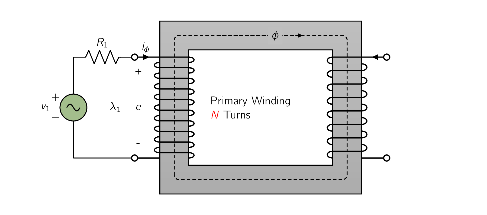
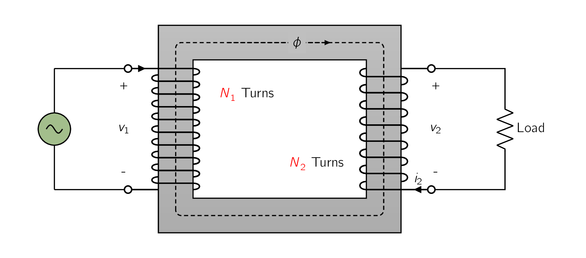
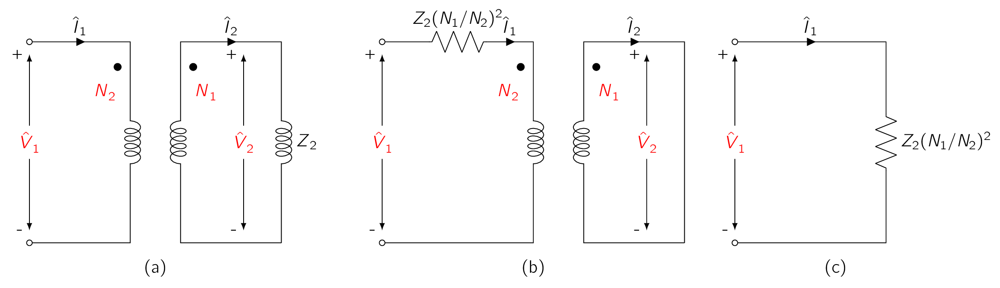
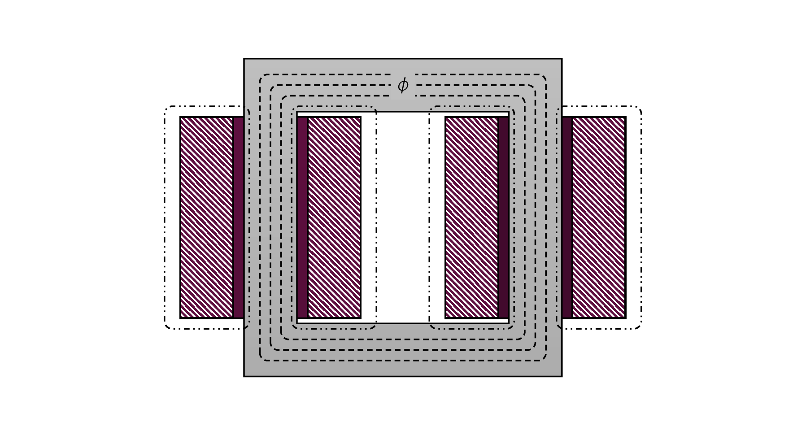

To get a better understanding of how a transformer works we need to study its behavior under different conditions and determine its important parameters.
Fig. 2.2 shows in schematic form a transformer with its secondary circuit open and an alternating voltage applied to its primary terminals.
To simplify the drawings, it is common on schematic diagrams of transformers to show the primary and secondary windings as if they were on separate legs of the core, as in Fig. 2.2, even though the in practice, the windings are actually interleaved.

As discussed previously, a small steady-state current (), called the exciting current, flows in the primary and establishes an alternating flux in the magnetic circuit. [29] In general, the exciting current corresponds to the net ampere-turns (MMFMagneto-motive ForceThe magnetic pressure which drives magnetic flux in a magnetic circuit, and is the work done to move a unit magnetic pole.) acting on the magnetic circuit, and it is not possible to distinguish whether it flows in the primary or secondary winding or partially in each winding. This flux induces an EMFElectro-motive ForceAn energy transfer to an electric circuit per unit of electric charge, measured in volts. Devices called electrical transducers provide an EMF by converting other forms of energy into electrical energy. Other types of electrical equipment also produce an emf, such as batteries, which convert chemical energy, and generators, which convert mechanical energy. This energy conversion is achieved by physical forces applying physical work on electric charges. However, electromotive force itself is not a physical force in the primary equal to:
| (2.1) |
where is flux linkage of the primary winding (), [30][30]Wilhelm Eduard Weber (1804 - 1891) a German physicist and, together with Carl Friedrich Gauss, inventor of the first electromagnetic telegraph. The unit of magnetic flux is named after him. is the flux in the core linking both windings (), is the number of turns in the primary winding, the voltage is in volts when is in webers. This EMFElectro-motive ForceAn energy transfer to an electric circuit per unit of electric charge, measured in volts. Devices called electrical transducers provide an EMF by converting other forms of energy into electrical energy. Other types of electrical equipment also produce an emf, such as batteries, which convert chemical energy, and generators, which convert mechanical energy. This energy conversion is achieved by physical forces applying physical work on electric charges. However, electromotive force itself is not a physical force, together with the voltage drop in the primary resistance , must balance the applied voltage , therefore we can write the relation:
| (2.2) |
At the moment we are neglecting the effects of primary leakage flux as it would create unnecessary complications. For all practical purposes, the flux contributes a small value to the core-flux, therefore we can neglect it. It does however play an important role in the behavior of transformers in real-life applications and taken into consideration.
If the transformer is sufficiently large, the effect of the no-load resistance can be neglected which would make the induced EMFElectro-motive ForceAn energy transfer to an electric circuit per unit of electric charge, measured in volts. Devices called electrical transducers provide an EMF by converting other forms of energy into electrical energy. Other types of electrical equipment also produce an emf, such as batteries, which convert chemical energy, and generators, which convert mechanical energy. This energy conversion is achieved by physical forces applying physical work on electric charges. However, electromotive force itself is not a physical force very nearly equals the applied voltage . Furthermore, the waveforms of voltage and flux are very nearly sinusoidal. Therefore, if the instantaneous flux is:
| (2.3) |
the induced voltage () is therefore:
| (2.4) |
where is the maximum value of the flux () and , with frequency being (). For the current and voltage reference directions shown in Fig. 2.2, the induced EMFElectro-motive ForceAn energy transfer to an electric circuit per unit of electric charge, measured in volts. Devices called electrical transducers provide an EMF by converting other forms of energy into electrical energy. Other types of electrical equipment also produce an emf, such as batteries, which convert chemical energy, and generators, which convert mechanical energy. This energy conversion is achieved by physical forces applying physical work on electric charges. However, electromotive force itself is not a physical force leads the flux by . The RMSRoot-Mean SquareEquivalent direct current (DC) voltage of an alternating current (AC) source. value of the induced EMFElectro-motive ForceAn energy transfer to an electric circuit per unit of electric charge, measured in volts. Devices called electrical transducers provide an EMF by converting other forms of energy into electrical energy. Other types of electrical equipment also produce an emf, such as batteries, which convert chemical energy, and generators, which convert mechanical energy. This energy conversion is achieved by physical forces applying physical work on electric charges. However, electromotive force itself is not a physical force () is:
| (2.5) |
If the resistive voltage drop is assumed negligible, the counter EMFElectro-motive ForceAn energy transfer to an electric circuit per unit of electric charge, measured in volts. Devices called electrical transducers provide an EMF by converting other forms of energy into electrical energy. Other types of electrical equipment also produce an emf, such as batteries, which convert chemical energy, and generators, which convert mechanical energy. This energy conversion is achieved by physical forces applying physical work on electric charges. However, electromotive force itself is not a physical force equals the applied voltage. Under these conditions, if a sinusoidal voltage is applied to a winding, a sinusoidally varying core flux must be established whose maximum value satisfies the requirement that in Eq. (2.5) equal the rms value of the applied voltage. Therefore we can write:
| (2.6) |
Under these conditions, the core flux is determined solely by the applied voltage (), its frequency (), and the number of turns () in the winding.
This relation applies not only to transformers but to any device with a sinusoidally-alternating voltage, as long as the resistance and leakage-inductance voltage drops are negligible.
The core flux is fixed by the applied voltage, and the required exciting current is determined by the magnetic properties of the core. The exciting current must adjust itself so as to produce the MMFMagneto-motive ForceThe magnetic pressure which drives magnetic flux in a magnetic circuit, and is the work done to move a unit magnetic pole. required to create the flux demanded by Eq. (2.6) .
Due to the non-linear magnetic properties of iron, the waveform of the exciting current differs from the waveform of the flux, which we have looked at Fig. 1.8 in Magnetic Circuits and Materials.
If the exciting current is analysed using Fourier-series, it is found to consist of a fundamental component and a series of odd harmonics. [31] This is caused by the function being a sine function which classify it as a Fourier odd-series. The fundamental component can, in turn, be resolved into two (2) components:
- 1.
- one in phase with the counter EMFElectro-motive ForceAn energy transfer to an electric circuit per unit of electric charge, measured in volts. Devices called electrical transducers provide an EMF by converting other forms of energy into electrical energy. Other types of electrical equipment also produce an emf, such as batteries, which convert chemical energy, and generators, which convert mechanical energy. This energy conversion is achieved by physical forces applying physical work on electric charges. However, electromotive force itself is not a physical force, and
- 2.
- the other lagging the counter EMFElectro-motive ForceAn energy transfer to an electric circuit per unit of electric charge, measured in volts. Devices called electrical transducers provide an EMF by converting other forms of energy into electrical energy. Other types of electrical equipment also produce an emf, such as batteries, which convert chemical energy, and generators, which convert mechanical energy. This energy conversion is achieved by physical forces applying physical work on electric charges. However, electromotive force itself is not a physical force by .
The in-phase component supplies the power absorbed by hysteresis and eddy-current losses in the core. It is referred to as core-loss component of the exciting current. When the core-loss component is subtracted from the total exciting current, the remainder is called the magnetizing current. It comprises a fundamental component lagging the counter EMFElectro-motive ForceAn energy transfer to an electric circuit per unit of electric charge, measured in volts. Devices called electrical transducers provide an EMF by converting other forms of energy into electrical energy. Other types of electrical equipment also produce an emf, such as batteries, which convert chemical energy, and generators, which convert mechanical energy. This energy conversion is achieved by physical forces applying physical work on electric charges. However, electromotive force itself is not a physical force by , together with all the harmonics. The principal harmonic is the third. [32] For typical power transformers, the third harmonic usually is about 40 % of the exciting current.
Except in problems concerned directly with the effects of harmonic currents, the exciting-current waveform distortions can be assumed negligible, as the exciting current itself is small, especially in large transformers.
For example, the exciting current of a typical power transformer is about to of full-load current. In the end, the effects of the harmonics usually are dominated out by the sinusoidal-currents supplied to other linear elements in the circuit.
The exciting current can then be represented by an equivalent sinusoidal current which has the same RMSRoot-Mean SquareEquivalent direct current (DC) voltage of an alternating current (AC) source. value and frequency and produces the same average power as the actual exciting current. Such representation is essential to the construction of a phasor diagram, which represents the phase relationship between the various voltages and currents in a system in vector form. Each signal is represented by a phasor whose length is proportional to the amplitude of the signal and whose angle is equal to the phase angle of that signal as measured with respect to a chosen reference signal. In Fig. 2.3, the phasors and respectively, represent the RMSRoot-Mean SquareEquivalent direct current (DC) voltage of an alternating current (AC) source. values of the induced EMFElectro-motive ForceAn energy transfer to an electric circuit per unit of electric charge, measured in volts. Devices called electrical transducers provide an EMF by converting other forms of energy into electrical energy. Other types of electrical equipment also produce an emf, such as batteries, which convert chemical energy, and generators, which convert mechanical energy. This energy conversion is achieved by physical forces applying physical work on electric charges. However, electromotive force itself is not a physical force and the flux. The phasor represents the RMSRoot-Mean SquareEquivalent direct current (DC) voltage of an alternating current (AC) source. value of the equivalent sinusoidal exciting current. It lags the induced emf by a phase angle . The core loss , equal to the product of the in-phase components of the and , is given by:
| (2.7) |
An electric arc furnace (EAF) is a furnace that heats material by means of an electric arc.
An Industrial EAF range in size from small units of approximately one-tonne capacity, used in foundries for producing cast iron products, up to about 400-tonne units used for secondary steelmaking. Industrial EAF temperatures can reach , while laboratory units can exceed .
As an example, a mid-sized modern steelmaking furnace would have a transformer rated about 60,000,000 volt-amperes (60 MVA), with a secondary voltage between 400 and 900 volts and a secondary current in excess of 44,000 amperes.
In electric arc furnaces, the material inside the furnace (referred to as a charge) is directly exposed to an electric arc, and the current from the electrode terminals passes through the charge material. Arc furnaces differ from induction furnaces, which use eddy currents to heat the charge.
As a first approximation, consider a transformer with a primary winding of turns and a secondary winding of turns, as shown schematically in Fig. 2.5. Please observe the secondary current is defined as positive out of the winding, therefore positive secondary current produces an MMFMagneto-motive ForceThe magnetic pressure which drives magnetic flux in a magnetic circuit, and is the work done to move a unit magnetic pole. in the opposite direction from that created by positive primary current.

Let us assume the properties of this transformer are idealised under the assumption that winding resistances are negligible, and all the flux is confined to the core and links both windings, [33] This means the leakage flux is assumed negligible. that there are no losses in the core, and that the permeability of the core is so high that only a negligible exciting MMFMagneto-motive ForceThe magnetic pressure which drives magnetic flux in a magnetic circuit, and is the work done to move a unit magnetic pole. is required to establish the flux.
These properties are closely approached but never actually attained in practical transformers.
A hypothetical transformer having these properties is often called an ideal transformer. Under the above assumptions, when a time-varying voltage is given on the primary terminals, a core flux must be established such that the counter emf equals the impressed voltage. Therefore:
| (2.8) |
The core flux also links the secondary and produces an induced EMFElectro-motive ForceAn energy transfer to an electric circuit per unit of electric charge, measured in volts. Devices called electrical transducers provide an EMF by converting other forms of energy into electrical energy. Other types of electrical equipment also produce an emf, such as batteries, which convert chemical energy, and generators, which convert mechanical energy. This energy conversion is achieved by physical forces applying physical work on electric charges. However, electromotive force itself is not a physical force , and an equal secondary terminal voltage , given by
| (2.9) |
From the ratio of Eq. (2.8) and Eq. (2.9) :
| (2.10) |
An ideal transformer transforms voltages in the direct ratio of the turns in its windings.
Now let’s have a load and connect it to the secondary. A current and an MMFMagneto-motive ForceThe magnetic pressure which drives magnetic flux in a magnetic circuit, and is the work done to move a unit magnetic pole. are then present in the secondary. Given that the core permeability is assumed very large and since the impressed primary voltage sets the core flux as specfied by Eq. (2.8) , the core flux is unchanged by the presence of a load on the secondary, and hence the net exciting MMFMagneto-motive ForceThe magnetic pressure which drives magnetic flux in a magnetic circuit, and is the work done to move a unit magnetic pole. acting on the core [34] which is equal to . will NOT change and hence will remain negligible. Therefore
| (2.11) |
From Eq. (2.11) we see that a compensating primary MMFMagneto-motive ForceThe magnetic pressure which drives magnetic flux in a magnetic circuit, and is the work done to move a unit magnetic pole. must result to cancel that of the secondary. We can write it as:
| (2.12) |
Therefore we see that the requirement that the net MMFMagneto-motive ForceThe magnetic pressure which drives magnetic flux in a magnetic circuit, and is the work done to move a unit magnetic pole. remain unchanged is the means by which the primary “knows” of the presence of load current in the secondary as any change in MMFMagneto-motive ForceThe magnetic pressure which drives magnetic flux in a magnetic circuit, and is the work done to move a unit magnetic pole. flowing in the secondary as the result of a load must be accompanied by a corresponding change in the primary MMFMagneto-motive ForceThe magnetic pressure which drives magnetic flux in a magnetic circuit, and is the work done to move a unit magnetic pole..
For the reference directions shown in Fig. 2.5 the mmf’s of and are in opposite directions and therefore compensate.
The net MMFMagneto-motive ForceThe magnetic pressure which drives magnetic flux in a magnetic circuit, and is the work done to move a unit magnetic pole. acting on the core therefore is zero, in accordance with the assumption that the exciting current of an ideal transformer is zero. From Eq. (2.12) :
| (2.13) |
Therefore an ideal transformer transforms currents in the inverse ratio of the turns in its windings. Also notice from Eq. (2.10) and Eq. (2.13) that:
| (2.14) |
This means, the instantaneous power input to the primary equals the instantaneous power output from the secondary, a necessary condition because all dissipative and energy storage mechanisms in the transformer have been neglected.

An additional property of the ideal transformer can be seen by considering the case of a sinusoidal applied voltage and an impedance load. The circuit is shown in simplified form in Fig. 2.6a, in which the dotmarked terminals of the transformer correspond to the similarly marked terminals in Fig. 2.5.
The dot markings indicate terminals of corresponding polarity.
Therefore, if one compares the voltages of the two windings, the voltages from a dot-marked to an unmarked terminal will be of the same instantaneous polarity for primary and secondary.
In other words, the voltages and in Fig. 2.6a are in phase. Also currents and are in phase as seen from Eq. (2.12) .
The polarity of is defined as into the dotted terminal and the polarity of is defined as out of the dotted terminal.
We next investigate the impendance transformation properties of the ideal transformer. In phasor form, Eq. (2.10) and Eq. (2.13) can be expressed as
| (2.15) |
From these equations we can derive the following relation:
| (2.16) |
Noting that the load impedance is related to the secondary voltages and currents
| (2.17) |
where is the complex impedance of the load. Consequently, as far as its effect is concerned, an impedance in the secondary circuit can be replaced by an equivalent impedance in the primary circuit, provided the following condition is assumed true:
| (2.18) |
Therefore, the three circuits of Fig. 2.6 are indistinguishable as far as their performance viewed from terminals ab is concerned. Transferring an impedance from one side of a transformer to the other in this fashion is called referring the impedance to the other side.
Impedances transform as the square of the turns ratio.
In a similar manner, voltages and currents can be referred to one side or the other by using Eq. (2.15) to evaluate the equivalent voltage and current on that side.
The departures of an actual transformer from those of an ideal transformer must be included to a greater or lesser degree in most analyses of transformer performance. A more complete model must take into account the effects of winding resistances, leakage fluxes, and finite exciting current due to the finite [35] and indeed non-linear permeability of the core.
In some cases, the capacitances of the windings also have important effects, notably in problems involving transformer behavior at frequencies above the audio range or during rapidly changing transient conditions such as those encountered in power system transformers as a result of voltage surges caused by lightning or switching transients.
The analysis of these high-frequency problems is beyond the scope of the lecture. In addition, to keep thing simple, the capacitances of the windings will be neglected.
Two methods of analysis by which departures from the ideal can be taken into account:
- Physical Reasoning
-
Developing an equivalent-circuit model of the transformer which all physical effect are represented as circuit elements.
- Magnetic Circuit
-
Studying the behavior of the transformer using magnetically coupled circuits which tries to develop the model from a magnetic material perspective.
Both methods are in everyday use, and both have very close parallels in the theories of rotating machines. However, as it offers an excellent example of the thought process involved in translating physical concepts to a quantitative theory, the equivalent circuit technique is presented here.
Deriving the Circuit Model
To begin the development of a transformer equivalent circuit, we first consider the primary winding. The total flux linking the primary winding can be divided into two (2) components:
- 1.
- The resultant mutual flux, confined essentially to the iron core and produced by the combined effect of the primary and secondary currents, and
- 2.
- The primary leakage flux, which links only the primary.
These components are identified in the schematic transformer shown in Fig. 2.7, where for simplicity the primary and secondary windings are shown on opposite legs of the core. [36] In an actual transformer with interleaved windings, the details of the flux distribution are more complicated, but the essential features remain the same.

The leakage flux induces voltage in the primary winding which adds to the mutual flux. Given the leakage path is largely in air, this flux and the voltage induced by it vary linearly with primary current . It can therefore be represented by a primary leakage inductance . [37] Which is equal to the leakage-flux linkages with the primary per unit of primary current. The corresponding primary leakage reactance is found as
| (2.19) |
Of course, it is also worth mentioning, there will be a voltage drop in the primary resistance . We now see the primary terminal voltage consists of three components:
-
the drop in the primary resistance,
-
the drop arising from primary leakage flux, and
-
the EMFElectro-motive ForceAn energy transfer to an electric circuit per unit of electric charge, measured in volts. Devices called electrical transducers provide an EMF by converting other forms of energy into electrical energy. Other types of electrical equipment also produce an emf, such as batteries, which convert chemical energy, and generators, which convert mechanical energy. This energy conversion is achieved by physical forces applying physical work on electric charges. However, electromotive force itself is not a physical force induced in the primary by the resultant mutual flux.
Fig. 2.10a shows an equivalent circuit for the primary winding which includes each of these voltages.
The resultant mutual flux links both the primary and secondary windings and is created by their combined MMFMagneto-motive ForceThe magnetic pressure which drives magnetic flux in a magnetic circuit, and is the work done to move a unit magnetic pole.’s. It is convenient to treat these mmf’s by considering the primary current must meet two requirements of the magnetic circuit:
- 1.
- It must not only produce the MMFMagneto-motive ForceThe magnetic pressure which drives magnetic flux in a magnetic circuit, and is the work done to move a unit magnetic pole. required to produce the resultant mutual flux,
- 2.
- It must also counteract the effect of the secondary MMFMagneto-motive ForceThe magnetic pressure which drives magnetic flux in a magnetic circuit, and is the work done to move a unit magnetic pole. which acts to demagnetize the core.
An alternative viewpoint is that the primary current must not only magnetize the core, it must also supply current to the load connected to the secondary. According to this picture, it is convenient to resolve the primary current into two (2) components:
- 1.
- an exciting component, and
- 2.
- a load component.
The exciting component is defined as the additional primary current required to produce the resultant mutual flux. It is a nonsinusoidal current of the nature described in Transformers under No-Load Conditions. [38] In fact, the exciting current corresponds to the net MMFMagneto-motive ForceThe magnetic pressure which drives magnetic flux in a magnetic circuit, and is the work done to move a unit magnetic pole. acting on the transformer core and cannot, in general, be considered to flow in the primary alone. However, for the purposes of this discussion, this distinction is not significant. The load component is defined as the component current in the primary which would exactly counteract the mmf of secondary current . Given it is the exciting component which produces the core flux, the net mmf must equal and thus we see that
| (2.20) |
and from Eq. (2.20) we see that
| (2.21) |
From Eq. (2.21) , we see that the load component of the primary current equals the secondary current referred to the primary exactly as in an ideal transformer.
The exciting current can be treated as an equivalent sinusoidal current , and can be resolved into a core-loss component in phase with the emf and a magnetizing component lagging by . In the equivalent circuit (Fig. 2.10b) the equivalent sinusoidal exciting current is accounted for by means of a shunt branch connected across , comprising a coreloss resistance in parallel with a magnetizing inductance whose reactance, known as the magnetizing reactance, is given by
| (2.22) |
In the equivalent circuit of (Fig. 2.10b) the power accounts for the core loss due to the resultant mutual flux. is referred to as the magnetizing resistance or core loss resistance and together with forms the excitation branch of the equivalent circuit, and we will refer to the parallel combination of and as the exciting impedance .
When is assumed constant, the core loss is thereby assumed to vary as or as , where is the maximum value of the resultant mutual flux. Strictly speaking, the magnetizing reactance () varies with the saturation of the iron.
When is assumed constant, the magnetizing current is thereby assumed to be independent of frequency and directly proportional to the resultant mutual flux. Both and are usually determined at rated voltage and frequency; they are then assumed to remain constant for the small departures from rated values associated with normal operation.
We will next add to our equivalent circuit a representation of the secondary winding. We begin by recognizing that the resultant mutual flux () induces an EMFElectro-motive ForceAn energy transfer to an electric circuit per unit of electric charge, measured in volts. Devices called electrical transducers provide an EMF by converting other forms of energy into electrical energy. Other types of electrical equipment also produce an emf, such as batteries, which convert chemical energy, and generators, which convert mechanical energy. This energy conversion is achieved by physical forces applying physical work on electric charges. However, electromotive force itself is not a physical force in the secondary, and given this flux links both windings, the induced-emf ratio must equal the winding turns ratio, i.e.,
| (2.23) |
just as in an ideal transformer. This voltage transformation and the current transformation of Eq. (2.21) can be accounted for by introducing an ideal transformer in the equivalent circuit, as in Fig. 2.10c. Just as is the case for the primary winding, the EMFElectro-motive ForceAn energy transfer to an electric circuit per unit of electric charge, measured in volts. Devices called electrical transducers provide an EMF by converting other forms of energy into electrical energy. Other types of electrical equipment also produce an emf, such as batteries, which convert chemical energy, and generators, which convert mechanical energy. This energy conversion is achieved by physical forces applying physical work on electric charges. However, electromotive force itself is not a physical force () is not the secondary terminal voltage, however, because of the secondary resistance and because the secondary current () creates secondary leakage flux (see Fig. 2.9). The secondary terminal voltage () differs from the induced voltage by the voltage drops due to secondary resistance () and secondary leakage reactance (), [39] This corresponds to the secondary leakage inductance . as in the portion of the complete transformer equivalent circuit (Fig. 2.10c) to the right of .
From the equivalent circuit of Fig. 2.10, the actual transformer therefore can be seen to be equivalent to an ideal transformer plus external impedances. By referring all quantities to the primary or secondary, the ideal transformer in Fig. 2.10c can be moved out to the right or left, respectively, of the equivalent circuit. This is almost invariably done, and the equivalent circuit is usually drawn as in Fig. 2.10d, with the ideal transformer not shown and all voltages, currents, and impedances referred to either the primary or secondary winding. Specifically, for Fig. 2.10d,
| (2.24) |
The circuit of Fig. 2.10d is called the equivalent-T circuit for a transformer. In Fig. 2.10d, in which the secondary quantities are referred to the primary Here, the referred secondary values are indicated with primes, for example, , and , to distinguish them from the actual values of Fig. 2.10c.
In the discussion that follows we almost always deal with referred values, and the primes will be omitted.
One must simply keep in mind the side of the transformers to which all quantities have been referred.
-
¶
- RMSRoot-Mean Square
Equivalent direct current (DC) voltage of an alternating current (AC) source.
-
¶
- EMFElectro-motive Force
An energy transfer to an electric circuit per unit of electric charge, measured in volts. Devices called electrical transducers provide an EMF by converting other forms of energy into electrical energy. Other types of electrical equipment also produce an emf, such as batteries, which convert chemical energy, and generators, which convert mechanical energy. This energy conversion is achieved by physical forces applying physical work on electric charges. However, electromotive force itself is not a physical force
-
¶
- MMFMagneto-motive Force
The magnetic pressure which drives magnetic flux in a magnetic circuit, and is the work done to move a unit magnetic pole.